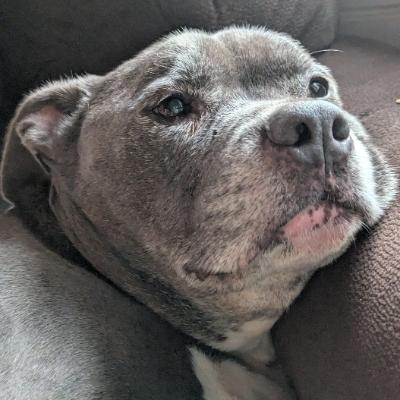
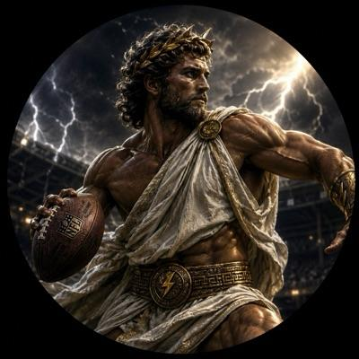

WEEK 11
IS UNWELL.
Best ball. League receipts, matchup chaos, and actual math to back up the slander.
Updated November 25, 2026 at 08:01 AM CT · Verified Sleeper results
The Chavenators chose violence
 173.66 points. Weekly high score, 9-0 in all-play, and a fresh invoice for everyone below them.
173.66 points. Weekly high score, 9-0 in all-play, and a fresh invoice for everyone below them.
🏆 Weekly Awardz
Ten managers. Ten different trophies. Data-backed chaos, most dramatic first.

4whoresmanWon by 58.83. The opponent has been placed in witness protection.
 Back From the Dead
Back From the DeadLamar hit it, Cam came
Jumped from #8 to #4 in scoring. Lazarus got the Wi-Fi password.
 Cursed by the Algorithm
Cursed by the Algorithm StinkyButt69
StinkyButt69
Scored 172.22 and STILL lost. The universe is farming engagement.
 Nuclear Warhead
Nuclear WarheadThe Chavenators
173.66 points. The scoreboard just filed a workers comp claim.
 bingbongtinydong
bingbongtinydong
Fell from #2 to #7. The wheels left the group chat.
docjoff
Won despite ranking #8 in points. The schedule is their franchise QB.
Wes Mantooth
Scored 103.66. The offense has been reported missing.

Krispy Kremepie48% of points came from outside the top three. Actual bench-industrial complex.
 Cardiac Arrest
Cardiac Arrest The fighting greeks
The fighting greeks
Survived by 0.80 points. Their Apple Watch called 911.
Connecticut Cheddarwurst
Top scorer contributed 24% of team points. Everybody else rode shotgun.
State of every bro
Tap your team. Scoreboard first, full receipts underneath.
10-1 Lamar hit it, Cam cameWIN · 153.62
Two-TE Arbitrage and Mendoza’s Quiet Rally: Undefeated Accounting Survives a Best-Ball Audit
THE FILM ROOM Film room: Lamar hit it, Cam came posted 153.62 in a WIN over Krispy Kremepie — Fernando Mendoza (31.63) and Geno Smith (25.69) lead the counted five while Javonte Williams (23.35) and George Kittle (17.65) supplied finishing work. Counted positional output shows QBs 57.32, RBs 36.35, WRs 32.7 and TE 27.25; top-three share is 52.5% so more than half the points funneled through the ultra-lean core.
THE BIGGER CONSPIRACY Bigger conspiracy: advanced insight — QB aggregate (57.32) outscored RBs and WRs and the counted TE output (27.25) paired with RB depth to create a unique arbitrage effect. Explanation: when two tight end/TE-ish contributors (Kittle plus supporting TE value inside the counted five) push TE scoring above typical floors, the auto-lineup flips correlation — QB upside compounds with TE durability and the RBs merely collect interest.
NEXT EPISODE Next episode: expect Mendoza/Geno to continue anchoring outcomes while the TE/RB blend functions like low-volatility alpha. Savage closer: this portfolio invoices opponents for touchdowns and then cashes the check in the end zone.
Top automatic best-ball scorers: Fernando Mendoza 31.63, Geno Smith 25.69, Javonte Williams 23.35
8-3 The ChavenatorsWIN · 173.66
Match: The Chavenators beat StinkyButt69, 173.66–172.22. Scored enough to win and actually got rewarded for it. Rare administrative competence. Top lineup contributors: Dak Prescott 47.65, C.J. Stroud 30.21, Ashton Jeanty 26.65.
Season vibe: #2 in total points with a 8-3 record. The weekly output was elite. Opponents should start reviewing their insurance. Scoring-deserved wins: 7.67; actual: 8.
Top automatic best-ball scorers: Dak Prescott 47.65, C.J. Stroud 30.21, Ashton Jeanty 26.65
7-4 StinkyButt69LOSS · 172.22
StinkyButt69: A One-Point Symphony of QB Depth and WR Glue That Somehow Lost the Encore
THE FILM ROOM Film room: StinkyButt69’s auto-lineup posted 172.22 and lost 172.22–173.66 — Cam Ward led with 33.22 and CeeDee Lamb chipped 29.45 while Joe Burrow added 28.90. Counted composition shows QBs 62.12, WRs 62.20, RBs 44.05 and TE 3.85; top-three share sits at 53.2%. The three-week trend (190.27 → 183.99 → 172.22) is a slow bleed from an apex: elite QB/WR scoring is holding a high floor but shrinking slightly.
THE BIGGER CONSPIRACY Bigger conspiracy: meaningful advanced insight — the counted QB output (62.12) nearly matched WR output (62.20), meaning this roster’s auto-lineup relied on true multi-QB correlation rather than single-signal heroics. Explanation: with two QBs contributing heavily, variance was converted to redundancy; yet schedule_luck −1.44 and a −1.44 weekly matchup margin turned that redundancy into a heartbreak — the opponent simply eked out one more tick.
NEXT EPISODE Next episode: the ensemble stays intact — Burrow, Ward and Lamb will keep providing the majority of scoring (top-three share 53.2%) while RB depth covers floors.
Top automatic best-ball scorers: Cam Ward 33.22, CeeDee Lamb 29.45, Joe Burrow 28.90
6-5 4whoresmanWIN · 162.49
Two-QB Buffet Goes Nuclear: 4whoresman Turns RB Depth Into a Buffet of Domination
THE FILM ROOM Film room: 4whoresman’s best-ball auto-lineup exploded for 162.49 points in a WIN over Wes Mantooth, with Jonah Coleman (35.90) and Jared Goff (32.36) leading the counted five while Derrick Henry (18.10), Tyler Shough (17.28) and James Cook III (16.70) filled the slab. Counted positional output shows RBs 84.4 vs QBs 49.64 vs WRs 23.9 vs TE 4.55 — an RB-first week where the top-three share (53.1%) reveals concentrated but multi-RB durability.
THE BIGGER CONSPIRACY Bigger conspiracy: meaningful advanced insight — RB positional haul of 84.4 points underwrote the two‑QB strategy and converted Jared Goff’s QB fireworks into a blowout rather than a squeak. All-play results (7–2) and a +58.83 weekly matchup margin confirm the counted composition crushed correlation risk this week: two QBs plus three high-floor RBs meant when one RB strolled, another stomped, and the opponent couldn’t string positional balance together.
NEXT EPISODE Next episode: expect continued RB-levered volcanics because the counted engine leans on multi‑RB depth to smooth two‑QB volatility; with season points 1,794.87 (third in scoring) this buffet will keep serving pain.
Top automatic best-ball scorers: Jonah Coleman 35.90, Jared Goff 32.36, Derrick Henry 18.10
5-6 The fighting greeksWIN · 142.24
The fighting greeks: Narrow QB pyrotechnics turn a Best-Ball squeaker into a tragicomic ledger win
THE FILM ROOM Film room: The fighting greeks auto-lineup eked out a 142.24–141.44 WIN where Jahmyr Gibbs (26.80) and Travis Kelce (23.90) and Aaron Rodgers (20.98) were the counted leaders. Counted positional output shows QB = 41.79, TE = 33.9, WR = 33.85, RB = 32.7 and the top-three share was 50.4% — meaning half the week’s value rode three scorers.
THE BIGGER CONSPIRACY Conspiracy board: schedule_luck −1.0 makes this feel like a win you earned the hard way. Meaningful advanced insight — QB positional haul (41.79) exceeded RB (32.7), so this roster leaned signal‑caller production over ground-game depth; in best ball that tilt buys upside but reduces redundancy.
NEXT EPISODE Next episode: the fighting greeks will keep auto‑rotating QB fireworks and pray the WR floor inflates; with season points 1,772.21 (rank 5), scoring‑deserved‑wins 6.00 vs actual 5, and top‑three share 50.4%, expect another cinematic squeaker — savage closer: you won like a Greek tragedy that forgot the epilogue, and the chorus is demanding overtime.
Top automatic best-ball scorers: Jahmyr Gibbs 26.80, Travis Kelce 23.90, Aaron Rodgers 20.98
5-6 Krispy KremepieLOSS · 146.39
Match: Krispy Kremepie lost to Lamar hit it, Cam came, 146.39–153.62. Lost despite finishing in the top half of weekly scoring. Certified schedule violence. Top lineup contributors: Chuba Hubbard 28.00, Justin Herbert 26.69, Ted Hurst III 21.35.
Season vibe: #7 in total points with a 5-6 record. This was a #5 weekly score, while your season-long points rank is #7. Scoring-deserved wins: 4.89; actual: 5.
Top automatic best-ball scorers: Chuba Hubbard 28.00, Justin Herbert 26.69, Ted Hurst III 21.35
4-7 bingbongtinydongLOSS · 141.44
Purdy’s Pocketbook: A One-Point Ledger Collapse and the Two-QB Insurance Policy That Caught Fire
THE FILM ROOM Film room: bingbongtinydong’s auto-lineup totaled 141.44 points in a razor-loss to The fighting greeks’ 142.24 — Brock Purdy delivered 29.20 and Jacoby Brissett added 23.49 while Chris Olave (18.95) and Parker Washington (18.3) supplied the WR depth that actually counted. Counted composition shows a QB tilt (QB = 52.69) and a WR engine (WR = 63.4) while RBs barely registered (RB = 14.2).
THE BIGGER CONSPIRACY Bigger conspiracy: meaningful advanced insight — top-three share sits at 50.7% meaning half your week came from Purdy/Brissett/Olave, and that QB combined output (52.69) reduced single-QB variance but increased reliance on passing correlation.
NEXT EPISODE Next episode: bingbongtinydong’s counted machine will keep banking on two-QB elevation and WR depth to manufacture ceilings; with Purdy and Brissett responsible for more than half the passing points and three-week oscillation proving fragile, expect more theatrical near-misses — savage closer: you’ve been writing checks with Purdy’s arm and the RB account keeps bouncing, so deposit more touchdowns or start selling tissues at the gate.
Top automatic best-ball scorers: Brock Purdy 29.20, Jacoby Brissett 23.49, Chris Olave 18.95
4-7 Wes MantoothLOSS · 103.66
Wes Mantooth’s Best-Ball Meltdown: QB/WR Tango Gets Steamrolled by an All‑Play Tyrant
THE FILM ROOM Film room: Wes Mantooth’s auto-lineup coughed up 103.66 points in a LOSS to 4whoresman’s 162.49 — DJ Moore (21.10) was the week’s top counted WR and Josh Allen (17.41) the top counted QB, with Amon‑Ra St. Brown adding 13.45. The counted five split WR 44.35, QB 30.66, RB 24.65 and TE 4.0; top-three share 50.1% means half the scoring lived in three players.
THE BIGGER CONSPIRACY Bigger conspiracy: all‑play 1–8 and a −58.83 weekly matchup margin reveal Mantooth’s week was not bad luck, it was a structural implosion. Meaningful advanced insight — WRs supplied 44.35 points while QBs only 30.66 and RBs 24.65: the WR/QB weighting created correlation fragility; when Moore and St.
NEXT EPISODE Next episode: the script stays the same — elite top-three performers show up but the supporting cast keeps mailing it in; with season points 1,614.86 (rank 8) and schedule_luck only 0.67, Wes’s team is a fireworks truck with no driver — spectacular explosions, catastrophic collisions. Savage closer: he drafted a concerto and got a kazoo solo at the finale.
Top automatic best-ball scorers: DJ Moore 21.10, Josh Allen 17.41, Amon-Ra St. Brown 13.45
4-7 docjoffWIN · 138.69
docjoff’s Mahomes-Led Symphonic Win: When a QB Duet and RB Depth Turned Best‑Ball Into a Paycheck
THE FILM ROOM Film room: docjoff’s auto-lineup clocked 138.69 points in a WIN over Connecticut Cheddarwurst — Patrick Mahomes delivered 33.71 and Emmett Johnson added 25.30 while Baker Mayfield chipped 22.83; those QBs combined for a counted QB haul of 56.54. RBs supplied 48.90 points and WRs only 24.80, so the team leaned QB-first but kept reliable backfield production.
THE BIGGER CONSPIRACY Bigger_conspiracy: meaningful advanced insight — positional output split (QB 56.54 vs RB 48.90 vs WR 24.80) reveals deliberate redundancy: counting two QBs produced QB scoring resilience, but the crucial engine was RB depth converting volume into steady points.
NEXT EPISODE Next_episode: with top-five contributors (Mahomes 33.71, Emmett Johnson 25.30, Baker Mayfield 22.83, Malik Nabers 16.75, David Montgomery 16.65) supplying 59% of scoring, docjoff’s construction will keep printing mid‑to‑high floors — this roster just turned QB fireworks into a bank withdrawal. Savage closer: they cashed the check and left the opponent wondering if their cheddar came with toast.
Top automatic best-ball scorers: Patrick Mahomes 33.71, Emmett Johnson 25.30, Baker Mayfield 22.83
2-9 Connecticut CheddarwurstLOSS · 97.15
Match: Connecticut Cheddarwurst lost to docjoff, 97.15–138.69. Opponent had more points. The scoreboard is a ruthless unpaid intern. Top lineup contributors: Mike Evans 23.40, Antonio Williams 20.95, Jameson Williams 18.30.
Season vibe: #9 in total points with a 2-9 record. A brutal weekly all-play showing. Redemption arc pending approval. Scoring-deserved wins: 2.89; actual: 2.
Top automatic best-ball scorers: Mike Evans 23.40, Antonio Williams 20.95, Jameson Williams 18.30
Week 11 All-Play Record
How many of the other nine teams each manager outscored this week. This is NOT the head-to-head record.
| Rank | Manager | All-play | Week pts |
|---|---|---|---|
| 1 | The Chavenators | 9-0 | 173.66 |
| 2 | StinkyButt69 | 8-1 | 172.22 |
| 3 | 4whoresman | 7-2 | 162.49 |
| 4 | Lamar hit it, Cam came | 6-3 | 153.62 |
| 5 | Krispy Kremepie | 5-4 | 146.39 |
| 6 | The fighting greeks | 4-5 | 142.24 |
| 7 | bingbongtinydong | 3-6 | 141.44 |
| 8 | docjoff | 2-7 | 138.69 |
| 9 | Wes Mantooth | 1-8 | 103.66 |
| 10 | Connecticut Cheddarwurst | 0-9 | 97.15 |
Total Season Lucky Dawg Rankings
Actual minus expected wins. Positive = favorable matchups; negative = brutal scheduling. Every week, 9-0 all-play earns 1 expected win, not 9 actual wins.
Gold = luckiest · Purple = unluckiest · Blue = everyone else. Dot numbers match the table below.
| Rank | Manager | Expected wins | Actual wins | Luck |
|---|---|---|---|---|
| #1 | Lamar hit it, Cam came | 6.44 | 10 | +3.56 |
| #2 | docjoff | 2.78 | 4 | +1.22 |
| #3 | Wes Mantooth | 3.33 | 4 | +0.67 |
| #4 | The Chavenators | 7.67 | 8 | +0.33 |
| #5 | Krispy Kremepie | 4.89 | 5 | +0.11 |
| #6 | 4whoresman | 6.11 | 6 | -0.11 |
| #7 | Connecticut Cheddarwurst | 2.89 | 2 | -0.89 |
| #8 | The fighting greeks | 6.00 | 5 | -1.00 |
| #9 | StinkyButt69 | 8.44 | 7 | -1.44 |
| #10 | bingbongtinydong | 6.44 | 4 | -2.44 |
NFL reality check
Advanced NFL player-game stats are awaiting verification for this week. We do not recycle last week's numbers.
Next week's propaganda
The receipts do not expire
The Chavenators has the weekly crown, Connecticut Cheddarwurst needs a bounce-back, and the remaining managers have seven days to manufacture excuses.